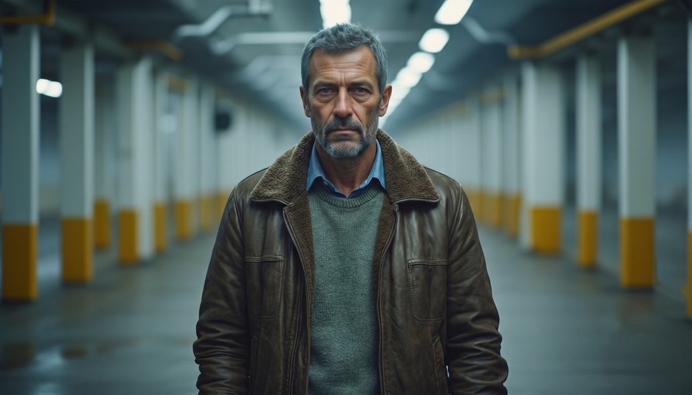
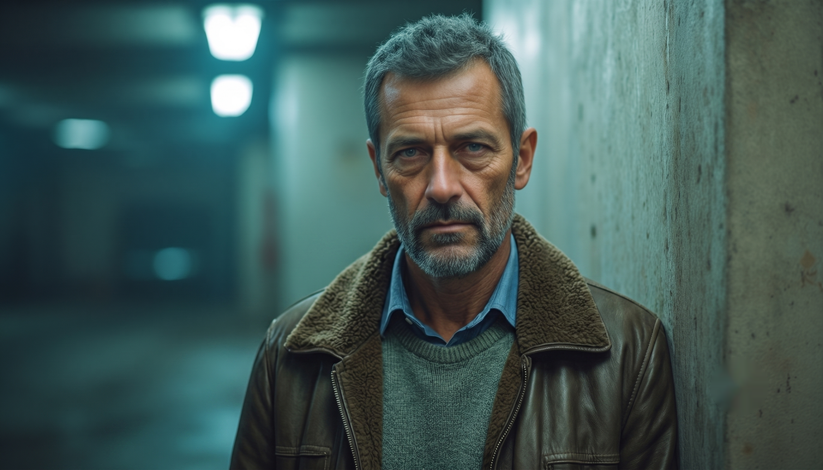
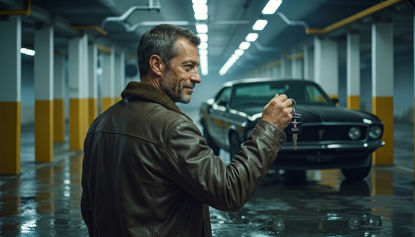
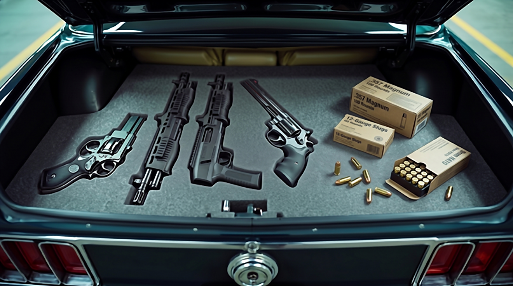
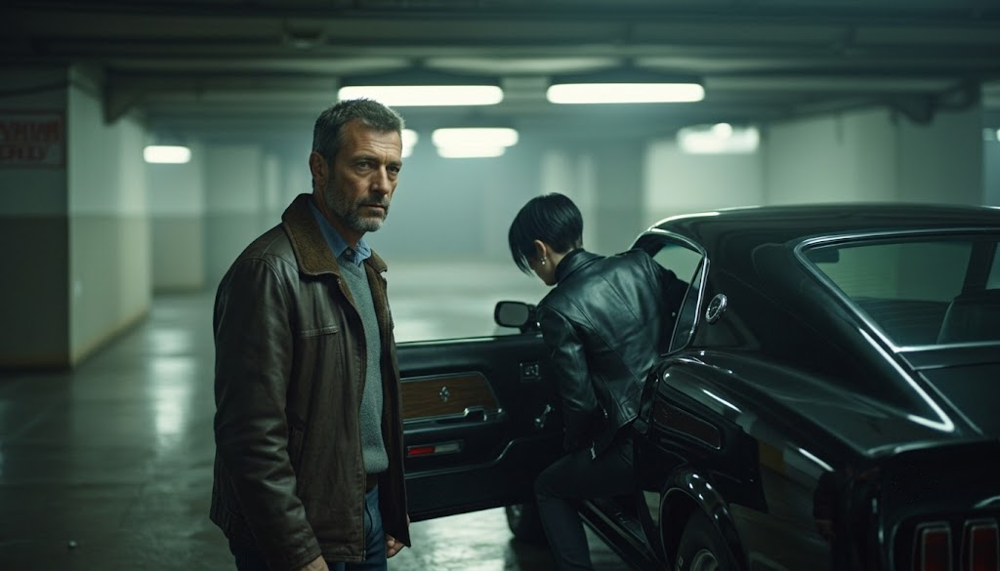
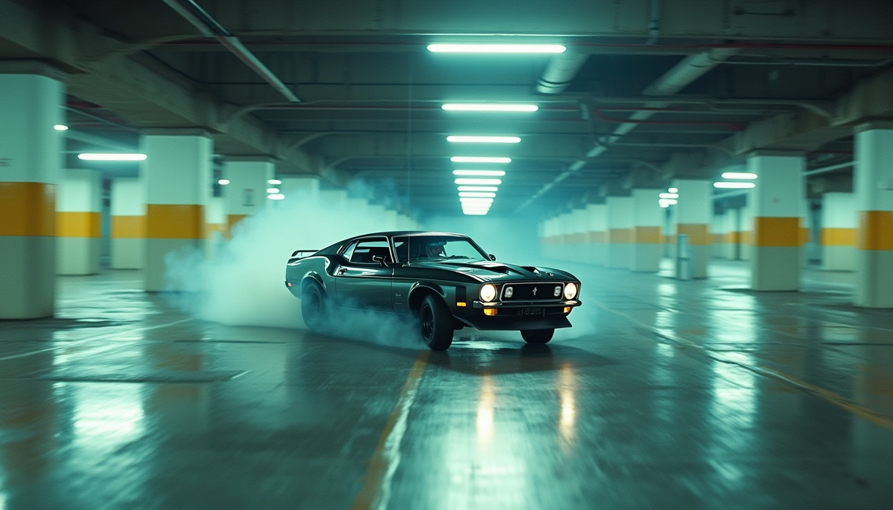
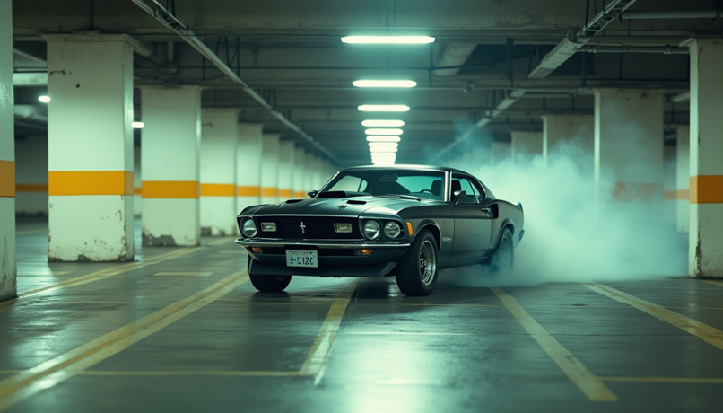
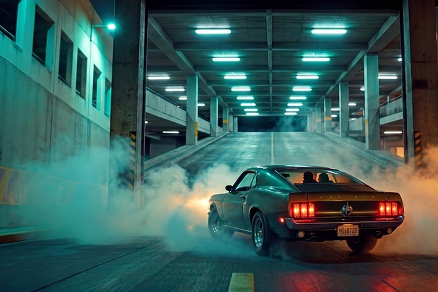
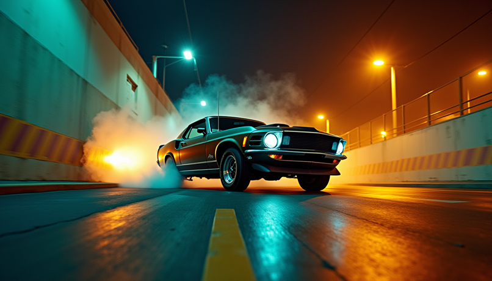

Garage sotterraneo, notte. John cammina con passo lento e deciso al centro del corridoio del garage, tra file simmetriche di pilastri bicolori: bianchi nella parte superiore e giallo ocra in quella inferiore. Pavimento leggermente bagnato. Luce fluorescente fredda dall'alto: l'incarnato caldo di John contrasta con il neon freddo, mentre il cuoio marrone scuro della giacca assorbe la luce in un ambiente di cemento grigio scuro, bianco e giallo ocra.
Garage sotterraneo, notte. Elena, pallida, immobile, sguardo fisso davanti a sé. Molto concentrata, tesa per la preparazione della rapina.

Garage sotterraneo, notte. John, appoggiato a un pilastro di cemento grezzo, aspetta immobile con sguardo fisso e intenso, molto concentrato. Luce identica all'inquadratura 1.

Garage sotterraneo, notte. John è davanti alla sua Ford Mustang nera, parcheggiata (male) poco dietro di lui. Guarda Elena fuori campo e tiene in mano le chiavi dell'auto, con aria compiaciuta. Luce fluorescente fredda da soffitto; un fascio radente dall'alto striscia sul cemento del pavimento bagnato.

Garage sotterraneo, notte. Inserto ravvicinato: il bagagliaio della Mustang è aperto e un'imbottitura di gommapiuma grigia contiene l'arsenale — una magnum, una beretta, due fucili a pompa e scatole di cartucce. Nessun personaggio in campo. La luce fluorescente del soffitto cade verticalmente nel vano aperto, creando riflessi speculari puntiformi sulle superfici metalliche (canna cromata della Magnum, slitta della Beretta), mentre la gommapiuma nera assorbe quasi tutta la luce.
Garage sotterraneo, notte. Davanti alla portiera passeggero, Elena carica la Beretta con un gesto rapido ed efficiente e la punta davanti a sé per provarne impugnatura e bilanciamento, occhi semichiusi e concentratissimi. Accanto a lei, John la osserva con aria altrettanto concentrata. Palette: nero, marrone cuoio, cemento, luci al neon.

Garage sotterraneo, notte. In primo piano a sinistra, John guarda intensamente e con aria guardinga verso l'osservatore; alla sua destra Elena è ripresa di schiena mentre sale dal lato passeggero dell'auto. Dominano toni freddi e desaturati — verdi-azzurri, grigi cemento, neri profondi dell'auto e della giacca — in una luce al neon che crea ombre morbide ma profonde, accentuando l'atmosfera noir. I riflessi sulla carrozzeria lucida dell'auto nera disegnano punti luce netti che ne definiscono le forme.

Garage sotterraneo, notte. La Mustang esegue una derapata controllata verso destra tra le file simmetriche dei pilastri: fumo di gomma e vapore generati dall'attrito sul pavimento bagnato. Luce fluorescente, nessun personaggio visibile — solo le silhouette dei due protagonisti all'interno dell'auto.

Garage sotterraneo, notte. Scena identica all'inquadratura 8, con l'auto ripresa leggermente più da vicino e il movimento di derapata invertito verso sinistra.

La Mustang entra a tutta velocità sulla rampa d'uscita del garage; all'estremità si intravede già la notte cittadina. Fumo di gomma e vapore generati dall'attrito sul pavimento bagnato, fari accesi prima dell'uscita, nessun personaggio visibile — solo le silhouette dei due protagonisti in auto. La parte bassa del fotogramma resta nel residuo fluorescente freddo blu-verde delle pareti della rampa, mentre il vapore sodio arancio-ambra caldo annuncia l'esterno.

Esterno notte. Città americana, deserta. La Mustang, appena uscita dal garage, sfreccia lungo un rettilineo. I riflessi dei lampioni notturni si allungano sull'umidità dell'ambiente in una luce calda, sull'asfalto liscio e bagnato.